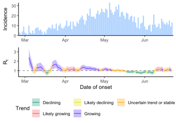

library(dplyr)
library(tidyr)
library(zoo)
library(data.table)
library(ggplot2)
library(EpiEstim)
library(janitor)
library(cowplot)
library(lubridate)12 \(R_t\) in practice
12.1 Interpret \(R_t\)
12.2 \(R_t\) with color code
Code
df <- readRDS("data/linelist.rds")
df <- df |>
count(date_onset) |>
complete(date_onset = seq(date_onset[1], date_onset[length(date_onset)], by = "days"),
fill = list(n = 0))
colnames(df) <- c("dates", "I")
df <- df |>
filter(dates > ymd("2023-02-24"), dates < ymd("2023-06-23"))
mod <- estimate_R(incid = df,
method = "parametric_si",
config = make_config(list(mean_si = 4.5, std_si = 1.3)))
df_line <- mod$R
df_line$dates <- mod$dates[df_line$t_end]
df_line <- clean_names(df_line)
df_line <- df_line |>
clean_names() |>
mutate(
b_posterior = std_r ^ 2 / mean_r,
a_posterior = mean_r / b_posterior,
pct = pgamma(
1,
shape = a_posterior,
scale = b_posterior,
lower.tail = F
),
trend = case_when(
pct > 0.9 ~ "purple",
pct > 0.75 & pct <= 0.9 ~ "red",
pct > 0.25 & pct <= 0.75 ~ "orange",
pct > 0.1 & pct <= 0.25 ~ "yellow",
pct <= 0.1 ~ "green"
)
)
df_line$trend <- factor(df_line$trend,
levels = c("green", "yellow", "orange", "red", "purple"))
df_ribbon <- df_line
df_ribbon$group <- consecutive_id(df_ribbon$trend)
df_ribbon <- head(do.call(rbind, by(df_ribbon, df_ribbon$group, rbind, NA)), -1)
df_ribbon[, c("trend", "group")] <- lapply(df_ribbon[, c("trend", "group")], na.locf)
df_ribbon[] <- lapply(df_ribbon, na.locf, fromLast = T)
cols <- c(
"green" = "#169873",
"yellow" = "#DFDF11",
"orange" = "#FFA200",
"red" = "#F2545B",
"purple" = "#5328FF"
)
labs <- c(
"green" = "Declining",
"yellow" = "Likely declining",
"orange" = "Uncertain trend or stable",
"red" = "Likely growing",
"purple" = "Growing"
)
epi_plot <- ggplot(df, aes(x = dates, y = I)) +
geom_bar(stat = "identity", fill = "#AED2FF") +
scale_x_date(limits = c(min(df$dates) - 1, max(df$dates) + 1), expand = c(0, 0)) +
scale_y_continuous(expand = c(0, 0)) +
labs(x = NULL, y = "Incidence") +
theme_classic()
rt_plot <- ggplot() +
geom_hline(yintercept = 1,
alpha = 0.5,
linetype = "dashed") +
geom_ribbon(
aes(
x = dates,
ymin = quantile_0_025_r,
ymax = quantile_0_975_r,
fill = trend,
group = group
),
data = df_ribbon,
alpha = 0.3
) +
geom_line(aes(
x = dates,
y = mean_r,
color = trend,
group = 1
), data = df_line) +
scale_x_date(limits = c(min(df$dates) - 1, max(df$dates) + 1), expand = c(0, 0)) +
scale_color_manual(
values = cols,
labels = labs,
guide = guide_legend(nrow = 2, byrow = TRUE)
) +
scale_fill_manual(
values = cols,
labels = labs,
guide = guide_legend(nrow = 2, byrow = TRUE)
) +
labs(
x = "Date of onset",
y = expression(R[t]),
color = "Trend",
fill = "Trend"
) +
theme_classic() +
theme(legend.position = "bottom")
plot_grid(epi_plot, rt_plot, nrow = 2, align = "v", rel_heights = c(0.4, 0.7))